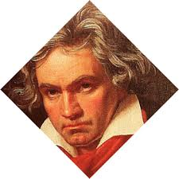
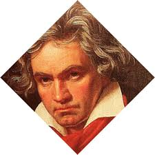

STEFAN ZWEIG GENOOTSCHAP NEDERLAND
JANUARI 2020
Beste Zweig vriendinnen en –vrienden,
Zoals beloofd in onze nieuwsbrief van 7 december 2019 sturen wij u graag het tweede deel toe van het verhaal dat Piet Wackie Eysten schreef over de relatie tussen Stefan Zweig en Ludwig van Beethoven. Om onze nieuwe lezers niet teleur te stellen hebben we hierbij ook het eerste deel van zijn verhaal opgenomen, zodat het essay in zijn geheel in deze nieuwsbrief te volgen is.
In 2020 wordt het 250ste geboortejaar van Beethoven in Bonn gevierd. Het Internationale Stefan Zweig Gesellschaft heeft daarom op 16 en 17 april 2020 in Bonn een Tagung georganiseerd. Reserveert u deze data alvast; binnenkort zullen wij u het programma toezenden.
Met hartelijke groet,
Dirk Jansen
Zweig en Beethoven
In april 1904 voltooit Zweig, hij is dan 22 jaar, zijn studie aan de Universiteit van Wenen met een dissertatie over Die Philosophie des Hippolyte Taine. In de inleiding tot dat proefschrift valt in zijn oeuvre voor het eerst de naam Beethoven. Hij betreurt, schrijft hij, het huidige ontbreken van creatieve scheppingskracht, grote geesten als weleer lijken er niet meer te zijn, ‘Napoleon, Goethe, Beethoven und Byron sind gestorben’. Ligt hier de kiem van de hartstocht waarmee hij zijn leven lang zo’n hartstochtelijk verzamelaar is gebleven van handschriften van grote geleerden en beroemde kunstenaars? Probeert hij daarmee de scheppende mens, het genie nader te komen, hem als het ware aan het werk te zien? Een bladzijde van Balzac met ontelbare correcties, een lied van Schubert met doorhalingen, een tekening van Dürer, ‘een eerste notitie van Beethoven, met zijn wilde, ongeduldige krassen, zijn woeste wirwar van begonnen en verworpen motieven, met daarin de tot een paar potloodstrepen gecomprimeerde scheppingsdrift van zijn demonisch geladen wezen’, zoals hij in zijn herinneringen Die Welt von gestern schrijft, het zijn voor hem even zovele mogelijkheden om oog in oog te staan met de scheppende kunstenaar, het ontstaan van een kunstwerk mee te beleven.
Als gymnasiast was hij al begonnen met het verzamelen van handschriften. Karl-Emil Franzos, uitgever van het in Berlijn verschijnende blad Deutsche Dichtung, waarin spoedig Stefans eerste gedichten zouden verschijnen, was een vermaard autografenverzamelaar. Met hem voert Zweig reeds als tiener een levendige correspondentie over hun gedeelte passie. In een brief van 18 februari 1898 – Zweig is dan net 16 jaar – biedt hij Franzos enkele stukken aan uit zijn eigen, nog bescheiden verzameling, onder andere een lange brief van Wieland, een door Goethe eigenhandig ondertekende brief en ‘ein unterschriebenes eigenhänd. Billet von Beethoven, sehr drastischen Inhalts’, voegt hij eraan toe. Het is hem menens. In 1914 verschijnt in de Weense Bibliophilenkalender een opstel van zijn hand met de veelzeggende titel Die Autographensammlung als Kunstwerk.
Zijn passie voor het verzamelen van handschriften blijkt hij te delen met de Franse schrijver, musicoloog en Beethovenbiograaf Romain Rolland, die hij voor het eerst ontmoet in 1913. In Die Welt von gestern beschrijft hij uitvoerig zijn eerste bezoek aan Rolland in Parijs, in april van dat jaar. Hij verbaast zich over Rollands kleine studeerkamer, ‘waar de boeken tot aan het plafond opgestapeld stonden’, en voegt daar in zijn dagboek aan toe: ‘Als wandversiering niets anders dan het dodenmasker van Beethoven en een portret van Richard Strauss’ [met wie Rolland goed bevriend was, pwe]. De hoofdpersoon in Rollands grote romancyclus Jean Christophe is een geniale jonge Duitse musicus, waarvoor Beethoven model heeft gestaan.
Gedurende de Eerste Wereldoorlog, als Zweig geruime tijd in Zwitserland verblijft, waar Rolland werkzaam is voor het Agentschap voor Krijgsgevangenen van het Rode Kruis, ontmoeten zij elkaar regelmatig. Tijdens zijn verblijf in Zwitserland in die oorlogsjaren is Zweig uiterst somber over het verloop van de oorlogshandelingen. Maar er zijn ook lichtere momenten. Op 26 oktober 1915 heeft hij een concert van het beroemde Rosé-kwartet bijgewoond. Zij hebben Beethoven gespeeld. ‘Ich lebe noch heute davon,’ noteert hij de volgende dag in zijn dagboek. Beethovens muziek ‘spoelde het vuil, de zwarte neerslag van de gebeurtenissen, van mij af.’
In maart 1927 wonen Zweig en Rolland samen in Wenen de concerten en feestelijkheden bij ter gelegenheid van het honderdste sterfjaar van hun gemeenschappelijke held. In de Weense krant Neue Freie Presse publiceert Rolland een ‘hommage’ aan Beethoven.
Rolland is een van de weinigen onder Zweigs vrienden die werkelijk belangstelling toonden voor diens verzameling handschriften. Eind december 1927 schrijft Zweig hem opgetogen over de aanwinsten die hij zich heeft kunnen veroorloven uit de opbrengsten van zijn toneelstuk Volpone, een bewerking van het gelijknamige stuk van de zeventiende-eeuwse Engelse toneelschrijver Ben Jonson. De première in het Wiener Burgtheater is een immens succes geweest, het stuk trekt in Oostenrijk en daarbuiten volle zalen. ‘Ik moet u bekennen, schrijft Zweig, dat ik alles wat die brave Volpone mij het afgelopen jaar heeft opgeleverd heb uitgegeven aan handschriften’. Een bijzondere aanwinst, die hij zich onmiddellijk na de première al had kunnen veroorloven, was het handschrift van Joseph Haydns Variaties op Gott erhalte Franz den Kaiser. Maar in de daarop volgende maanden heeft hij op veilingen een ware schat aan kostbare handschriften weten te bemachtigen. Onder andere van Bach (een volledige cantate, 16 bladzijden), Chopin, Cimarosa, Brahms (Zigeunerlieder, 22 bladzijden), Mozart (een mars en tien duetten), Schubert, Scarlatti etc. Ook literaire aanwinsten zijn daarbij, zoals 32 bladzijden van Montesquieus eerste ontwerp voor De l’esprit des lois, een redevoering van Robespierre, twee gedichten uit Les fleurs du mal van Baudelaire, een tekening (‘eine wundervolle’, schrijft Zweig) van Goethe, etc. ‘Bij uw volgende bezoek zult u de Kapuzinerberg (Zweigs grote woonhuis in Salzburg) in een museum veranderd vinden.’
Het topstuk van dat ‘museum’ verwerft Zweig een jaar later. In juni 1929 koopt hij, rechtstreeks van de eigenaren, de familie Von Breuning, die tot Beethovens vriendenkring had behoord, Beethovens schrijftafel. (ZIE FOTO)
Stephan von Breuning was een jeugdvriend van Beethoven uit Bonn, met wie hij ook in Wenen tot zijn dood bevriend bleef, hij droeg het Vioolconcert aan hem op. ‘Die schrijftafel is in 1827, na Beethovens dood, met diens gehele nalatenschap op een veiling door Breuning gekocht en sindsdien ononderbroken in het bezit van de familie gebleven’, schrijft Zweig aan een collega-verzamelaar. ‘Het was Beethovens enige goede meubelstuk, zegt men, zijn beroemde brief aan de Unsterbliche Geliebte is erin aangetroffen.’ Hij heeft het meubel relatief goedkoop kunnen verwerven, schrijft hij, ‘omdat het Oostenrijk niet mocht verlaten, er waren dus geen buitenlandse gegadigden. Bovendien wilde de familie dat de verkoop zo geruisloos mogelijk zou verlopen. Zodoende was, behalve ikzelf, alleen de gemeente Wenen geïnteresseerd, maar die was ‘so furchtbar langweilig’, dat ik het relatief goedkoop heb kunnen aanschaffen. Wij zullen het met grote vreugde in ons huis ‘museaal’ opstellen en goed bewaken.’ Hij voelt zich geen ‘eigenaar’, schrijft hij aan Rolland, maar slechts ‘Verwalter’, beheerder, om deze kostbaarheden uiteindelijk in een museum onder te brengen.
Het blijft niet bij de schrijftafel. Van de familie Von Breuning koopt Zweig ook nog de viool die Beethoven als kind zou hebben bespeeld, een opklapbaar lessenaartje, waarop Beethoven nog in bed zijn laatste composities en brieven heeft geschreven, een geldkistje en een kompas, wat je niet direct in Beethovens nalatenschap zou verwachten. Al deze voorwerpen werden uitgestald op de beroemde schrijftafel in de grote zaal van het huis op de Kapuzinerberg. ‘Daar stond’, herinnert Zweig zich in Die Welt von gestern, ‘de schrijftafel van Beethoven en zijn kleine geldkistje, waaruit hij nog toen hij al bedlegerig was met een door de dood beroerde, bevende hand de kleine bedragen voor het dienstmeisje had gehaald, een bladzijde uit zijn huishoudboek en een lok van zijn al grijze haar.’
ZWEIG EN BEETHOVEN DEEL II
Na zijn overhaaste vertrek uit Salzburg in februari 1934 wegens een brutale huiszoeking door de politie naar beweerdelijk verborgen wapens, vestigt Zweig zich aanvankelijk in Londen. Nog éénmaal, in augustus van dat jaar, komt Zweig terug in zijn oude huis. Op 25 augustus 1934 zijn Arturo Toscanini en Bruno Walter, beiden in Salzburg aanwezig vanwege de Festspiele, daar zijn gasten. Friderikes dochter Suze maakt van het beroemde drietal een beroemd geworden foto.
Zweig met zijn beide gasten Arturo Toscanini en Bruno Walter
Friderike staat nu voor de taak zich te ontfermen over de ontruiming en de verkoop van het grote huis, waartoe Stefan, tegen de zin van zijn vrouw, heeft besloten. De verstandhouding tussen de beide echtelieden is zeer gespannen. In Londen heeft Zweig een secretaresse in dienst genomen, Lotte Altmann genaamd. Zij zal enkele jaren later zijn tweede echtgenote worden.
In Londen heeft hij een ruim appartement gehuurd in Hallam Street. Hij geeft per brief instructies over zijn verhuizing aan Friderike. Hij wil zo weinig mogelijk naar Engeland meenemen, ‘ik ben nergens aan gehecht, ik wil alleen mijn hoofd maar vrij maken’, schrijft hij haar, ‘hoe meer je kan verkopen, hoe beter het is.’ Het bureau van Beethoven, die hij in een brief bedekt aanduidt als ‘een’ schrijftafel, van ‘mijn muzikale vriend’, is zonder twijfel het kostbaarste meubel in de inboedel. Het lijkt of hij niet goed weet wat hij ermee moet doen. ‘Over Beethovens schrijftafel zal ik snel een beslissing nemen’, schrijft hij op 17 april 1937 aan zijn vrouw. ‘Ik verkoop hem in geen geval en neem hem ook niet mee hier naartoe.’ Waarom deze voorzichtige omschrijving? Is hij bang dat het nog steeds niet geoorloofd is dit bijzondere meubel, mogelijk als Oostenrijks nationaal kunstbezit, naar het buitenland te brengen? Voorlopig wordt het kostbare meubel, met de andere Beethoven-reliquien in Wenen ondergebracht, bij zijn broer Alfred en een notaris. Met hulp van Alfred, die er misschien zakelijke of andere contacten had, is het bureau in de loop van 1937 alsnog in Engeland terecht gekomen.
In de zomer van 1939 verhuist Zweig naar een kleine villa in Bath. Op dinsdag 19 september brengt hij het grootste deel van de dag door in angstige afwachting van de komst van de verhuiswagens, ‘waiting for the vans’, noteert hij in zijn dagboek, dat hij vanaf september 1939 in het Engels voerde. Als die zo lang uitblijven is hij ‘quite convinced that something terrible must have happened with my furniture (poor Beethoven)’. Maar het valt mee, ‘the two vans arrive. We unpack all.’ Thuisgekomen hoort hij in de radio een ‘disgusting speech of Hitler, full of lies, the worst of all his speeches. To think, that this liar is the master of the world…’ Het zal voor Zweig spoedig the world of yesterday zijn.
Zijn handschriftenverzameling, die letterlijk duizenden manuscripten, autografen, brieven, gedichten, tekeningen en composities van beroemheden bevatte – Zweig gold als een internationaal vermaarde verzamelaar – was in 1937 voor het grootste deel in Wenen onder de hamer gekomen. Dit was Zweig op een boze brief van zijn vriend Rolland komen te staan, met wie de verhoudingen toch al enigszins waren verkild. Rolland was gepikeerd dat Zweig hem er niet tevoren van had verwittigd dat hij zijn collectie van de hand wilde doen; hij wíst toch dat Rolland vooral in Beethoven-stukken geïnteresseerd zou zijn geweest? ‘Ik kan niet begrijpen dat u ze liever in vreemde handen ziet komen, die daar niet veel mee zullen weten aan te vangen, dan ze eerst aan mij te tonen’, schreef hij op 1 maart 1938 aan zijn oude vriend.
In de catalogus voor de veiling in Wenen lijkt Zweig verantwoording af te leggen voor zijn verzameldrift. Of is het een geloofsbelijdenis? Hij schrijft:
“Wat ik zocht waren schetsen of ontwerpen voor gedichten of composities, omdat mij, meer dan iets anders, zowel uit biografisch als psychologisch opzicht, het mysterie van het ontstaan van een kunstwerk bezighield. De mysterieuze seconde waarin een versregel, een melodie vanuit het onkenbare op papier wordt vastgelegd en daardoor tastbaar wordt, waar is zij beter waar te nemen dan in de doorwrochte of in volledige overgave ontstane oervorm? Het ging er voor mij als verzamelaar vanaf het begin om de kunstenaar te kunnen bespieden tijdens zijn scheppingsproces en kunstwerken die allang als voltooide meesterwerken zijn opgenomen in de gevestigde wereldwijde kunstcanon opnieuw in de fase van wording en ontstaan zichtbaar te maken.”
In Londen verwierf Zweig ondanks alles opnieuw enkele collectors’ items. Hij kocht er onder andere handschriften van Händel en een topstuk als Schuberts manuscript van An die Musik. Ook voor zijn verzameling Beethoven-reliquien heeft hij nog interessante stukken kunnen aankopen, onder andere de tekening van Beethoven op zijn doodsbed door Danhauser.
De beide meer bekende tekeningen door Teltscher bezat hij al. ‘Nu heb ik met de schrijftafel een soort museum bij elkaar, dat geen mens ter wereld mij na kan doen,’ schrijft hij nog op 27 juli 1939 aan een vriend. In de British Library in Londen bevindt zich een getypte lijst, waarschijnlijk uit 1939/1940, met het opschrift Lebensreliquien Beethovens, met Zweigs handgeschreven toelichtingen en aanvullingen. Hoogstwaarschijnlijk heeft hij omstreeks die tijd het voornemen opgevat iets over Beethoven te publiceren. Een nieuwe Sternstunde misschien?
Wij zullen het waarschijnlijk nooit weten. Wij kunnen alleen vaststellen dat Zweig, niet minder dan zijn vriend Rolland, behalve verzamelaar, ook een groot bewonderaar èn een kritisch luisteraar van Beethoven is geweest. Na een concert in november 1931 met Bruno Walter, waar na een vroege symfonie van Haydn de Eroica werd gespeeld, roemde hij in zijn dagboek weliswaar Haydns ‘selige unschuldige Heiterkeit’, maar hij vervolgt: ‘Erst mit Beethoven ist der Mensch da. Haydn die Unschuld, Beethoven das Wissen um die Schuld.’